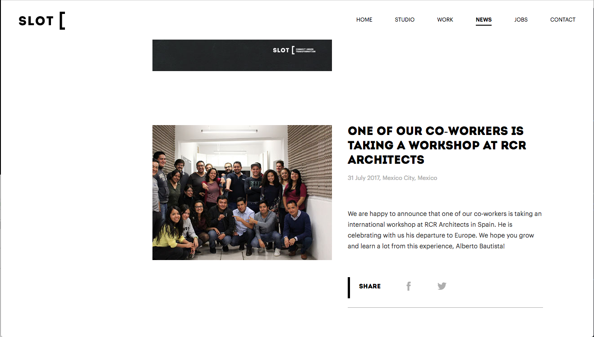
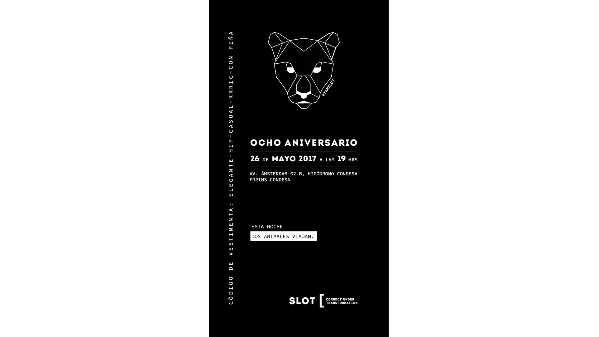
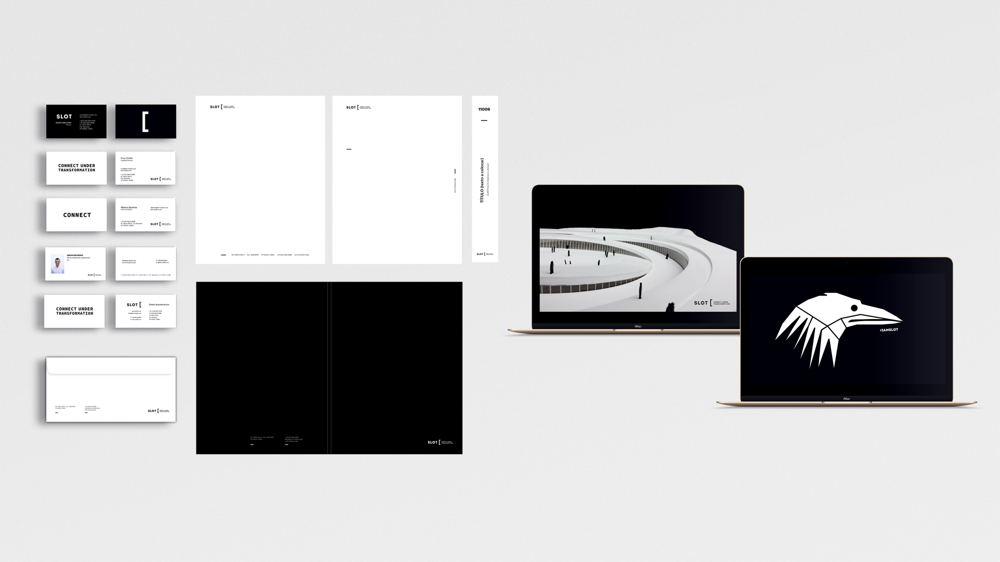

Caso de estudio
Slot
Branding para estudio de arquitectura

Descripción breve
Rediseño de identidad visual para un estudio de arquitectura de 50 colaboradores. El proyecto evolucionó de un requerimiento gráfico puntual a una reestructuración de la plataforma de marca (propósito, posicionamiento y narrativa). El enfoque aseguró la alineación entre la nueva identidad visual, la cultura organizacional y la experiencia del empleado, garantizando una transición coherente para el estudio de arquitectura.
Desafío
La firma buscaba diversificar su portafolio y posicionarse en nuevos mercados, pero su identidad y materiales comerciales no reflejaban su ambición ni evolución real. Identifiqué que el problema no era puramente gráfico, sino estratégico: la ausencia de una plataforma de marca definida generaba riesgos de desalineación entre la estrategia de negocio y su ejecución operativa. El reto consistió en coordinar una redefinición conceptual y visual profunda, gestionar el cambio cultural interno y supervisar la ejecución de los nuevos lineamientos de marca.
Proceso
Mi intervención se basó en una visión sistémica, articulando la estrategia con la implementación creativa:
Diagnóstico Estratégico: Analicé el portafolio y materiales previos, detectando inconsistencias entre la narrativa comercial y la expresión visual.
Alineación y Asesoría: Argumenté ante la dirección la necesidad de una plataforma de marca sólida y propuse la incorporación de un especialista para liderar la redefinición conceptual, optimizando así el uso del capital humano.
Gestión de Implementación: Lideré el desarrollo del sistema visual (arquitectura de marca, sistema tipográfico, lenguaje visual) y la creación de nuevos materiales comerciales (presentaciones de concursos, portafolio institucional, web).
Gestión del Cambio (Employee Experience): Apoyé en la implementación de procesos de adopción interna para los 35 colaboradores, asegurando que la cultura organizacional y la nueva identidad caminaran en paralelo, minimizando la resistencia al cambio y retrabajos.
Liderazgo de Talento: Gestioné a un diseñador Junior, garantizando la calidad, coherencia y ejecución técnica del nuevo sistema.
Resultado
Alineación Organizacional: Se logró una consistencia total entre posicionamiento, comunicación y cultura, fortaleciendo el capital institucional.
Eficiencia Operativa: La gestión del cambio facilitó una adopción fluida en los 35 colaboradores, reduciendo fricciones y garantizando la correcta implementación de los lineamientos en todos los niveles.
Evolución de Rol: El proyecto consolidó mi perfil hacia la dirección creativa demostrando capacidad para articular estrategia, cultura y expresión visual de forma unificada.
Habilidades
Galería


